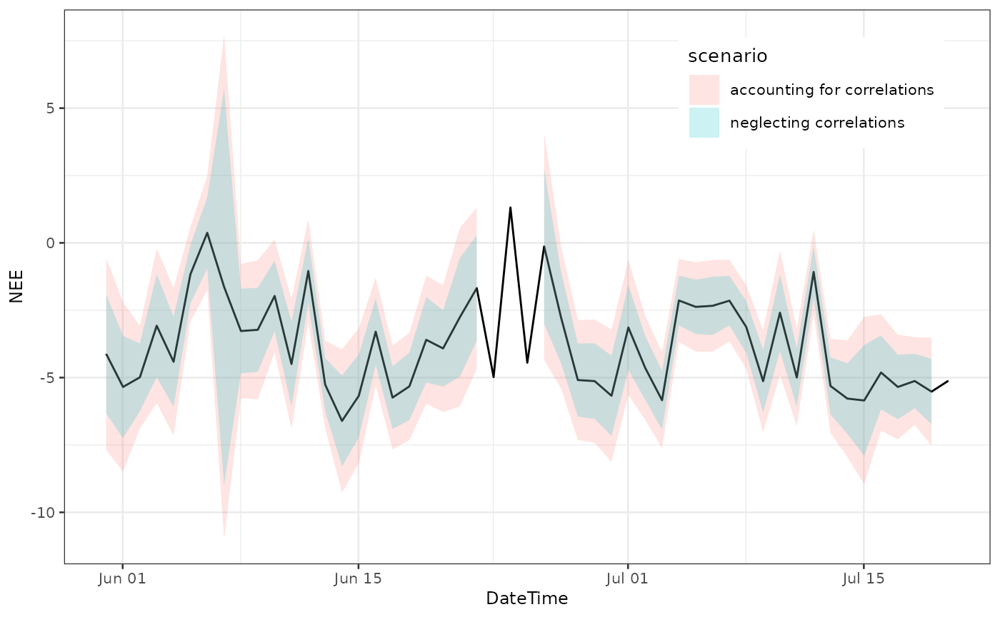

We start with half-hourly -filtered and gapfilled NEE_f values. For simplicity this example uses data provided with the package and omits threshold detection but rather applies a user-specified threshold.
With option FillAll = TRUE, an uncertainty, specifically
the standard deviation, of the flux is estimated for each record during
gapfilling and stored in variable NEE_uStar_fsd.
library(REddyProc)
library(dplyr)
EddyDataWithPosix <- Example_DETha98 %>%
filterLongRuns("NEE") %>%
fConvertTimeToPosix('YDH',Year = 'Year',Day = 'DoY', Hour = 'Hour')
EProc <- sEddyProc$new(
'DE-Tha', EddyDataWithPosix, c('NEE','Rg','Tair','VPD', 'Ustar'))
EProc$sMDSGapFillAfterUstar('NEE', uStarTh = 0.3, FillAll = TRUE)
results <- EProc$sExportResults()
results_good <- results %>% filter(NEE_uStar_fqc <= 1)
summary(results_good$NEE_uStar_fsd)## Min. 1st Qu. Median Mean 3rd Qu. Max.
## 0.03535 1.69194 2.31331 2.70544 3.39922 17.19675We can inspect, how the uncertainty scales with the flux magnitude.
REddyProc flags filled data with poor gap-filling by a quality flag
in NEE_<uStar>_fqc > 0 but still reports the
fluxes. For aggregation we recommend computing the mean including those
gap-filled records, i.e. using NEE_<uStar>_f instead
of NEE_orig. However, for estimating the uncertainty of the
aggregated value, the the gap-filled records should not contribute to
the reduction of uncertainty due to more replicates.
Hence, first we create a column similar NEE_orig_sd to
NEE_<uStar>_fsd but where the estimated uncertainty
is set to missing for the gap-filled records.
results <- EProc$sExportResults() %>%
mutate(
NEE_orig_sd = ifelse(
is.finite(.data$NEE_uStar_orig), .data$NEE_uStar_fsd, NA),
NEE_uStar_fgood = ifelse(
is.finite(.data$NEE_uStar_fqc) & (.data$NEE_uStar_fqc <= 1), .data$NEE_uStar_f, NA)
)If the aggregated mean should be computed excluding poor
quality-gap-filled data, then its best to use a column with values set
to missing for poor quality, e.g. using
NEE_<uStar>_fgood instead of
NEE_<uStar>_f. However, the bias in aggregated
results can be larger when omitting records, e.g. consistently omitting
more low night-time fluxes, than with using poor estimates of those
fluxes.
For a given u* threshold, the aggregation across time uses many
records. The random error in each record, i.e. NEE_fsd, is
only partially correlated to the random error to records close by.
Hence, the relative uncertainty of the aggregated value decreases
compared to the average relative uncertainty of the individual
observations.
With neglecting correlations among records, the uncertainty of the mean annual flux is computed by adding the variances. The mean is computed by . And hence its standard deviation by . This results in an approximate reduction of the average standard deviation by .
results %>% summarise(
nRec = sum(is.finite(NEE_orig_sd))
, NEEagg = mean(NEE_uStar_f)
, varSum = sum(NEE_orig_sd^2, na.rm = TRUE)
, seMean = sqrt(varSum) / nRec
, seMeanApprox = mean(NEE_orig_sd, na.rm = TRUE) / sqrt(nRec)
) %>% select(NEEagg, nRec, seMean, seMeanApprox)## NEEagg nRec seMean seMeanApprox
## 1 -1.657303 10901 0.02988839 0.02650074Due to the large number of records, the estimated uncertainty is very low.
When observations are not independent of each other, the formulas now become where , and with the number of effective observations decreasing with the autocorrelation among records (Bayley 1946, Zieba 2011).
The average standard deviation now approximately decreases only by about :
$$ Var(m) = \frac{s^2}{n_{eff}} = \frac{\frac{n_{eff}}{n(n_{eff}-1)} \sum_{i=1}^n \sigma_i^2}{n_{eff}} = \frac{1}{n(n_{eff}-1)} \sum_{i=1}^n \sigma_i^2 \\ = \frac{1}{n(n_{eff}-1)} n \bar{\sigma^2_i} = \frac{\bar{\sigma^2_i}}{(n_{eff}-1)} $$
First we need to quantify the error terms, i.e. model-data residuals.
For all the records of good quality, we have an original measured value
NEE_uStar_orig and modelled value from MDS gapfilling,
NEE_uStar_fall.
For computing autocorrelation, equidistant time steps are important. Hence, instead of filtering, the residuals of non-observation, i.e. gap-filled, data are set to missing.
results <- EProc$sExportResults() %>%
mutate(
resid = ifelse(NEE_uStar_fqc == 0, NEE_uStar_orig - NEE_uStar_fall, NA)
,NEE_orig_sd = ifelse(
is.finite(.data$NEE_uStar_orig), .data$NEE_uStar_fsd, NA)
)Now we can inspect the the autocorrelation of the errors.
acf(results$resid, na.action = na.pass, main = "")The empirical autocorrelation function shows strong positive autocorrelation in residuals up to a lag of 10 records.
Computation of effective number of observations is provided by
function computeEffectiveNumObs from package
lognorm based on the empirical autocorrelation function for
given model-data residuals. Note that this function needs to be applied
to the series including all records, i.e. not filtering quality flag
before.
autoCorr <- lognorm::computeEffectiveAutoCorr(results$resid)
nEff <- lognorm::computeEffectiveNumObs(results$resid, na.rm = TRUE)
c(nEff = nEff, nObs = sum(is.finite(results$resid)))## nEff nObs
## 4230.522 10901.000We see that the effective number of observations is only about a third of the number of observations.
Now we can use the formulas for the sum and the mean of correlated normally distributed variables to compute the uncertainty of the mean.
resRand <- results %>% summarise(
nRec = sum(is.finite(NEE_orig_sd))
, NEEagg = mean(NEE_uStar_f, na.rm = TRUE)
, varMean = sum(NEE_orig_sd^2, na.rm = TRUE) / nRec / (!!nEff - 1)
, seMean = sqrt(varMean)
#, seMean2 = sqrt(mean(NEE_orig_sd^2, na.rm = TRUE)) / sqrt(!!nEff - 1)
, seMeanApprox = mean(NEE_orig_sd, na.rm = TRUE) / sqrt(!!nEff - 1)
) %>% select(NEEagg, seMean, seMeanApprox)
resRand## NEEagg seMean seMeanApprox
## 1 -1.657303 0.04798329 0.04254471The aggregated value is the same, but its uncertainty increased compared to the computation neglecting correlations.
Note, how we used NEE_uStar_f for computing the mean,
but NEE_orig_sd instead of NEE_uStar_fsd for
computing the uncertainty.
When aggregating daily respiration, the same principles hold.
However, when computing the number of effective observations, we
recommend using the empirical autocorrelation function estimated on
longer time series of residuals (autoCorr computed above)
in computeEffectiveNumObs instead of estimating them from
the residuals of each day.
First, create a column DoY to subset records of each day.
results <- results %>% mutate(
DateTime = EddyDataWithPosix$DateTime # take time stamp form input data
, DoY = as.POSIXlt(DateTime - 15*60)$yday # midnight belongs to the previous
)Now the aggregation can be done on data grouped by DoY. The notation
!! tells summarise to use the variable
autoCorr instead of a column with that name.
aggDay <- results %>%
group_by(DoY) %>%
summarise(
DateTime = first(DateTime)
,nEff = lognorm::computeEffectiveNumObs(
resid, effAcf = !!autoCorr, na.rm = TRUE)
, nRec = sum(is.finite(NEE_orig_sd))
, NEE = mean(NEE_uStar_f, na.rm = TRUE)
, sdNEE = if (nEff <= 1) NA_real_ else sqrt(
mean(NEE_orig_sd^2, na.rm = TRUE) / (nEff - 1))
, sdNEEuncorr = if (nRec <= 1) NA_real_ else sqrt(
mean(NEE_orig_sd^2, na.rm = TRUE) / (nRec - 1))
, .groups = "drop_last"
)
aggDay## # A tibble: 365 × 7
## DoY DateTime nEff nRec NEE sdNEE sdNEEuncorr
## <int> <dttm> <dbl> <int> <dbl> <dbl> <dbl>
## 1 0 1998-01-01 00:30:00 11.0 21 0.124 0.760 0.536
## 2 1 1998-01-02 00:30:00 3.66 7 0.00610 1.56 1.04
## 3 2 1998-01-03 00:30:00 0 0 0.0484 NA NA
## 4 3 1998-01-04 00:30:00 0 0 0.303 NA NA
## 5 4 1998-01-05 00:30:00 10.9 28 0.195 0.861 0.521
## 6 5 1998-01-06 00:30:00 18.0 48 0.926 0.615 0.370
## 7 6 1998-01-07 00:30:00 18.0 48 -0.337 0.566 0.340
## 8 7 1998-01-08 00:30:00 17.7 46 -0.139 0.525 0.320
## 9 8 1998-01-09 00:30:00 17.5 45 0.614 0.474 0.290
## 10 9 1998-01-10 00:30:00 15.4 36 0.242 0.641 0.411
## # ℹ 355 more rows## Warning: A numeric `legend.position` argument in `theme()` was deprecated in ggplot2
## 3.5.0.
## ℹ Please use the `legend.position.inside` argument of `theme()` instead.
## This warning is displayed once every 8 hours.
## Call `lifecycle::last_lifecycle_warnings()` to see where this warning was
## generated.
The confidence bounds (+-1.96 stdDev) computed with accounting for correlations in this case are about twice the ones computed with neglecting correlations.
There is also flux uncertainty due to uncertainty in u* threshold estimation. Since the same threshold is used for all times in a given uStar scenario, the relative uncertainty of this component does not decrease when aggregating across time.
The strategy is to
1. estimate distribution of u* threshold
2. compute time series of NEE (or other values of interest) for draws from this distribution, i.e. for many uStar-scenarios
3. compute each associated aggregated value
4. and then look at the distribution of the aggregated values.
Note that the entire processing down to the aggregated value has to be repeated for each uStar scenario. Hence, obtaining a good estimate of this uncertainty is computationally expensive.
1. First, we estimate many samples of the probability density of the unknown uStar threshold.
# for run-time of the vignette creation, here we use only few (3) uStar quantiles
# For real-world applications, a larger sample (> 30) is required.
nScen <- 3 # nScen <- 39
EddyDataWithPosix <- Example_DETha98 %>%
filterLongRuns("NEE") %>%
fConvertTimeToPosix('YDH',Year = 'Year',Day = 'DoY', Hour = 'Hour')
EProc <- sEddyProc$new(
'DE-Tha', EddyDataWithPosix, c('NEE','Rg','Tair','VPD', 'Ustar'))
EProc$sEstimateUstarScenarios(
nSample = nScen*4, probs = seq(0.025,0.975,length.out = nScen) )
uStarSuffixes <- colnames(EProc$sGetUstarScenarios())[-1]
uStarSuffixes # in real world should use > 30## [1] "uStar" "U2.5" "U50" "U97.5"2. Produce time series of gapfilled NEE for each scenario. They are stored in columns distinguished by a suffix with the quantile.
EProc$sMDSGapFillUStarScens('NEE')3. Compute the annual mean for each scenario. Method
sEddyProc_sApplyUStarScen calls a user-provided function
that takes an argument suffix for each u*-threshold scenario. Here, we
use it to create the corresponding NEE column name and compute mean
across this column in the data exported from REddyProc.
computeMeanNEE <- function(ds, suffix){
column_name <- paste0("NEE_",suffix,"_f")
mean(ds[[column_name]])
}
FilledEddyData <- EProc$sExportResults()
NEEagg <- unlist(EProc$sApplyUStarScen(computeMeanNEE, FilledEddyData))
NEEagg## uStar U2.5 U50 U97.5
## -1.616926 -1.630219 -1.625671 -1.8992834. compute uncertainty across aggregated values
sdNEEagg_ustar <- sd(NEEagg)
sdNEEagg_ustar## [1] 0.1376159Assuming that the uncertainty due to unknown u*threshold is independent from the random uncertainty, the variances add.
sdAnnual <- data.frame(
sdRand = resRand$seMean,
sdUstar = sdNEEagg_ustar,
sdComb = sqrt(resRand$seMean^2 + sdNEEagg_ustar^2)
)
sdAnnual## sdRand sdUstar sdComb
## 1 0.04798329 0.1376159 0.1457413